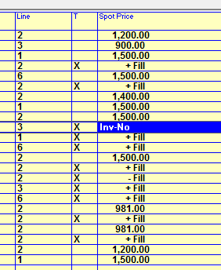
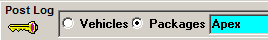

Fill Spots and Package Spots
Changing the Status of Fill Spots
If the user has the setting “Change Invoice Fill Spot Status in Post Log” in User Options set to Green, they will be able to change the invoice status (whether the spot should appear on the invoice or not) for fill spots by clicking the toggle on the Spot Price field for fill spots.
To change the invoice status for a fill spot
- Click in the Spot Price field for a fill spot.
- The Spot Price field changes to a blue toggle that can be toggled between the different options by clicking on the toggle. The following options are available:
- Inv-Advt: use the default advertiser setting.
- Inv-Yes: show the fill spot on the invoice (“+ Fill”).
- Inv-No: do not show the fill spot on the invoice (“- Fill”).
- Any changes made will be saved automatically.

Package Spots
Once Preliminary or Final Invoices have been run, package spots are created by the system and can be viewed and edited if needed in Post Log.
To view or edit package spots, press the Packages radio button in the upper left corner of the Post Log screen to switch from the Vehicles to the Packages view.

Select the package name to view, then select the date the package is on from the calendar dropdown. Days with package spots for the selected package name will be shown in blue. Days without package spots for the selected package will be shown in red.
The following changes can be made to a package spot: the date and time change be changed, the copy can be added or changed, and the package spot can be canceled.
Editing a Package Spot
To change the date or time of a package spot, simply click in the date or time field and edit it as needed.
To change the copy for a package spot, click in the copy field and select the correct copy.
Tip: the Post Log screen packages view can be used to easily assign copy to a package spot when the copy is missing from the invoice. After assigning copy to the package spot in Post Log, reprint the invoice so that it shows the correct copy.
Canceling a Package Spot
To cancel a package spot:
- Select the package vehicle and date from the top part of the screen.
- Click and hold the mouse button down on the package spot until the word “drag” appears, then drag the spot to the Cancel reason in the lower left corner and then release the mouse button.
Canceled package spots appear as canceled on invoices. In the invoice example below, one package spot “Apex” was canceled and set to a cancel reason of “missed”.
Removing a package spot
A package spot can also be removed by dragging the package spot to the waste bin icon in the lower right corner (this icon only appears when dragging a package spot). When a package spot has been removed, a new package spot will be created for it when invoices are run again.
Viewing a canceled package spot
To view a canceled package spot, on the Packages view, enter “from” and “to” dates that cover the original date of the package spot.
From this view, the package spot can be dragged and dropped back in the aired area to reactivate it.